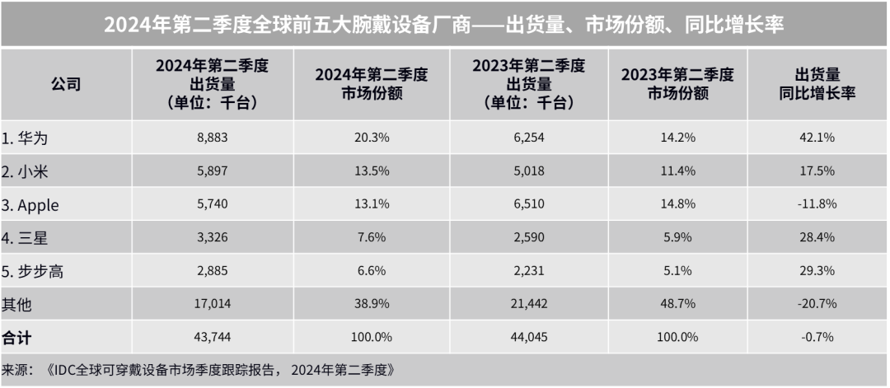
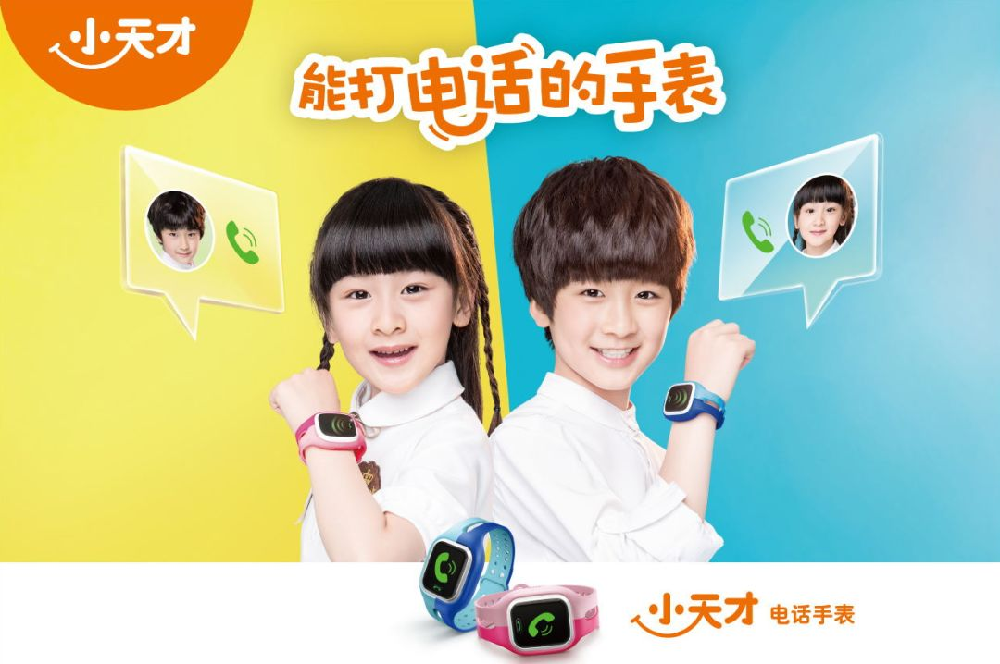
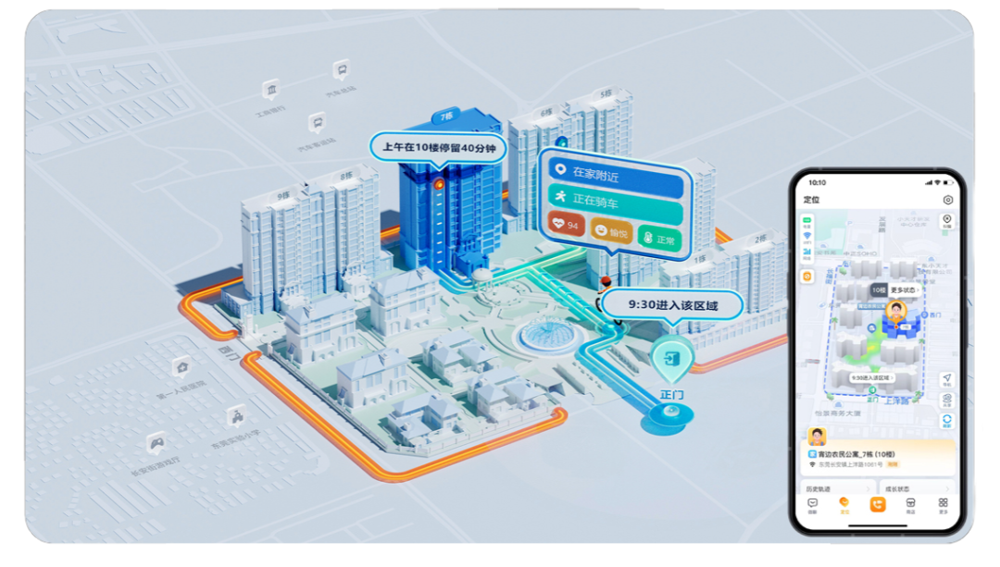
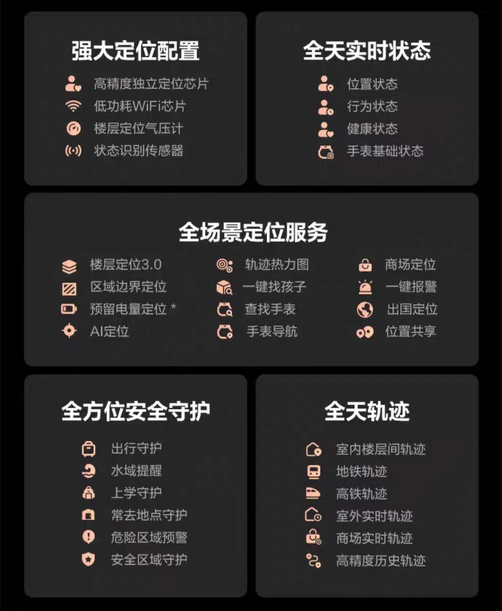
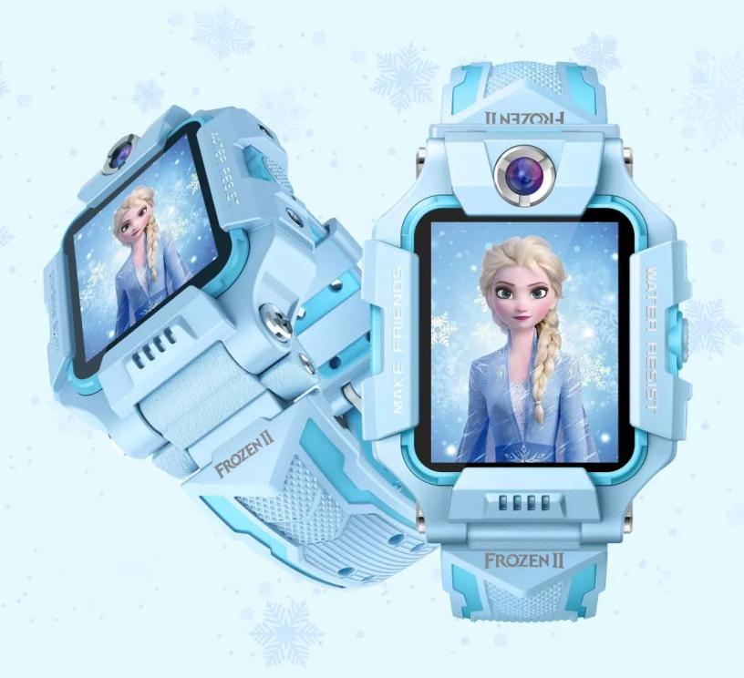
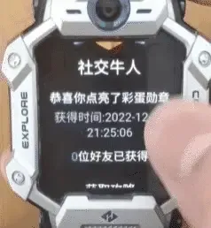

网络效应带来了网络外部性。当使用小天才电话手表的儿童数量越多，小天才电话手表的隐形价值就越高，吸引力越强，从而吸引更多的用户加入，进一步增加手表的价值。
上个周末，回老家参加堂姐的婚礼，在婚礼期间，遇到了一个读三年级的小女孩。小女孩见我手腕上带着一个粉色的运动手表，可能是配色比较吸引她，小女孩自然而然地拉住我的手，抠住我的手表想要摘下来研究一番。我出于好心和保护自己手表的原则，耐心地向她解释：“这是华为最近新出的运动手表，这个配色粉粉嫩嫩的是不是很好看呀？”
没有我预想中的兴奋的回应，小女孩听了我的话后反而失落地说了一句：“啊？华为啊，我才不要呢，太low了，我要小天才，我们班的人都带小天才。”听到她的回复，我感到疑惑，为什么华为这样一个国民大品牌在孩子眼里都没小天才有面子？小天才手表的购买率为何如此之高？它究竟在用户心中占据了怎样的地位？
国际数据公司（IDC）最新发布的《全球可穿戴设备市场季度跟踪报告》显示，2024年第二季度全球腕戴设备市场（包含智能手表和手环产品）前五大腕戴设备厂商分别为华为、小米、Apple、三星和步步高。其中，前四大设备厂商作为全球知名的科技品牌，拥有强大的品牌影响力和用户忠诚度，并且早已在腕戴设备领域厮杀多年。而步步高（小天才的母公司）作为儿童手表厂商，其出货量显著增长主要来自于中国儿童手表市场的复苏，单凭儿童智能手表这一单一品类就能做到全球前五大腕戴设备的厂商，并且出货量还在稳定增长，小天才在儿童智能手表的统治力可见一斑。

表1 《全球可穿戴设备市场季度跟踪报告》
那么小天才电话手表究竟是如何在品牌林立的智能手表行列脱颖而出的？
精准定位+洗脑式营销占领用户心智
提及小天才电话手表，许多人脑海中首先浮现的，便是《爸爸去哪儿》综艺里天天和 Cindy 两位小童星拍摄的广告：“不管你在哪里，一个电话，马上能找到你～”“能打电话的手表，小天才电话手表！” 数年过去，观众依然对 “能打电话的手表，小天才电话手表！” 这句经典台词记忆犹新，足见小天才当年营销策略之成功。深入剖析便会发现，小天才的用户定位极为精准。其产品专为儿童设计，儿童作为直接使用者，父母则是购买决策者。基于此，小天才的广告策略与投放渠道紧紧围绕这一核心用户群体展开。
2015年，小天才邀请当年大热综艺《爸爸去哪儿》中的童星天天和Cindy代言，两位小童星的号召力吸引了大量小朋友与家长的目光，极大增强了广告的吸引力。

图1 天天、Cindy代言小天才电话手表
在广告投放渠道选择上，小天才电话手表主要瞄准电视上的儿童综艺与亲子节目。像湖南卫视的《爸爸去哪儿》《神奇的孩子》，以及北京卫视的《八八爸爸》等，这些节目的观众与小天才的目标用户高度契合。值得一提的是，2015 年全国居民平均每百户年末彩色电视机拥有量为 119.9 台，其中城镇居民达 122.3 台，农村居民为 116.9 台。在电视普及率如此之高的背景下，小天才通过在这些热门节目投放广告，几乎确保全国大部分亲子家庭都能看到，进一步扩大了品牌影响力。
广告设计方面，小天才采用了直接有效的 “洗脑” 式广告语，如 “能打电话的手表，小天才电话手表” 以及 “不管你在哪里，一个电话马上就找到你”，这些广告语精准突出了产品的核心功能与卖点。借助简单的旋律、重复的歌词，小天才成功在消费者心中构建起 “儿童电话手表 = 小天才” 的品牌认知。这一策略不仅强化了产品记忆点，还助力小天才电话手表在市场竞争中脱颖而出，斩获显著优势。
聚焦用户需求痛点，构建护城河
在儿童电话手表领域，仅靠洗脑式的营销并不足以支撑小天才品牌的市场领导地位。聚焦用户需求痛点，围绕用户需求不断优化迭代产品，才是小天才立于不败之地的关键。上文提及过，小天才的用户定位为父母与儿童，注意这是两个群体：父母，是消费者（购买决策者），他们的购买权力对产品的市场表现至关重要；儿童，是使用者，他们是真正使用该产品的人，虽没有购买权力，但他们的需求和偏好同样对父母的购买决策产生重大影响。
在大部分的厂商视角中，由于家长是最终的拍案决定者，因此，家长的优先级会更高，更专注于解决父母关注的问题。但是随着社会的进步和家长教育观念的更新，儿童在家庭决策中的影响力日益增强，因此，儿童的需求同样应得到足够的重视。于是，小天才在其他厂商都着力解决家长关心的问题时，偷偷迎合着孩子的需求。在这种双管齐下的策略，使得小天才的产品在满足安全性和通讯基本需求的同时，更通过社交功能的创新，构建了独特的竞争壁垒，形成了品牌的网络效应。
父母的定心丸
父母的需求其实非常简单，即使用电话手表用以监控孩子的状态，确保孩子的安全。小天才在满足父母的需求方面，和其他厂商一样尽心尽力。比如最为基础的定位功能，小天才Z9电话手表支持精准定位，包括楼层高度识别和商场轨迹识别功能。家长可以通过手机端APP查看孩子所在楼层及具体位置，以及孩子在商场的活动轨迹，为了能获取更准确的数据，小天才还和定位技术排名全国第一的武汉大学合作，研制出一套精密的位置信息采集设备。此外，手表还支持区域边界定位和危险区域预警功能，一旦孩子走出安全区或进入危险区域，家长都会第一时间收到警报，确保孩子的安全。
早在2019年，小天才就领先行业首创接入SOS紧急呼叫系统。该联合110报警系统已覆盖安徽、广东、浙江等地的近百个城市；联合120急救中心已覆盖全国27个省的223个城市。

图2 小天才的定位系统
在健康监测方面，小天才的最新版Z10，这款手表可以全天监测孩子的体温、血氧水平、心率以及精力状态，帮助家长及时了解孩子的健康状况。同时，小天才Z10还支持各种运动模式记录，从跑步、骑行到游泳，全面覆盖孩子的运动需求。
最后，在家长管控方面，小天才虽然在表面上给予了孩子支付、交友等方面一定的自主权，让孩子享受一定的独立与自主。但实际上深谙家长的心，电话手表该在什么时间使用，该如使用，例如手表在校禁用、上课禁用、睡眠禁用，应用管控和时长管控等都在家长的控制范围之内。
总而言之，小天才在产品介绍时，将一切看起来专业的名词都往上放，只为用复杂而又冗长的安全介绍词将家长“看晕”，虽然不知道这些功能对于保障孩子安全究竟能起到多大的作用，但是至少为家长提供了莫大的“安全感”，因为这些词看起来就非常专业且非常安全！

图3 小天才的“功能矩阵”
孩子的“名利场”
在儿童智能手表市场，众多厂商都致力于满足父母的需求，不断推出更新换代的产品。然而，这并不能成为小天才品牌在市场上独占鳌头的唯一理由。因为“安全”对于技术的要求并不高，任何一款电话手表都能做到。所以对于小天才来说，“安全”只是满足了基本的需求，只解决了家长买不买的问题。
小天才品牌之所以能够脱颖而出，关键在于其对产品使用者——儿童的深刻洞察。他们不仅关注父母的期望，更将目光投向了儿童的实际体验和需求。在讨小朋友“欢心”这点上，小天才下了巨大的努力。
首先，在外观设计上。小天才深谙儿童审美以及潮流趋势，配色上色彩生动，暮光银、晨曦粉、天境蓝、豆蔻紫……一系列炫酷又不失童真的颜色都能在小天才这里找到。在显示屏周围的装饰上，小天才更是绞劲脑汁地添加时尚属性，将机甲风外观和精致金属质感工艺融为一体，致力于让孩子一看到就直呼“好酷，想要！”。
最后，每一个男孩心中都有一个英雄梦，每一个女孩心中都有一个公主梦，小天才自然也意识到这一点，主动和国内外知名IP进行合作。例如联名“冰雪奇缘”的艾莎公主，艾莎公主作为独立、自主与勇气的化身，也成为了无数小女孩心目中的偶像，带上联名手表，你就是了不起的艾莎公主；和大黄蜂、擎天柱、钢铁侠、蜘蛛侠等以正派的英雄的形象出名的全球大IP合作，迎合孩子们的英雄梦；致敬中国航天，推出Z9中国航天定制款，正确引导孩子们认识我国的科技实力，培养爱国情怀，激发孩子们对于航天的热情，更加努力学习科学知识。

图4 小天才“冰雪奇缘”联名手表
其次，在手表功能上。小天才儿童电话手表的使用群体为3-15岁的少年儿童，这一阶段是孩子自我意识、好奇心发展的重要阶段，小天才顺势为儿童设计了支付功能，儿童可以用手表进行支付，买他们想要的东西（只是支付这一动作，支付金额和支付所得物品都在父母的掌控之中），但这一设计极大满足了儿童的自尊心。
此外，小天才还借鉴《名侦探柯南》中可以翻转的麻醉手表，设计了翻转拍照功能，这一小小的举动直接俘获了儿童的好奇心。最后，为了满足儿童娱乐的需求，小天才的功能设计也越来越向手机靠近，儿童可以自主安装一些APP，包含动漫、视频、游戏等，虽然越来越靠向娱乐化的功能设计饱受家长质疑，但也是真的架不住孩子喜欢。
其实无论是外观设计还是功能设计，其技术门槛都非常低，当同行反应过来后，同样能推行出相同甚至更好功能的手表。因此，小天才使用了最后一个“杀手锏”来搭建自己的护城河，构建封闭社交圈。有研究表明，同伴接纳在儿童青少年发展中具有成人无法取代的独特作用和重要适应价值(Wei Hsisheng,Chen Jikang,2010;邹泓,1997)。与同辈群体（指拥有相近的年龄、兴趣、爱好、价值观、社会地位的一群人）的交流是青少年社会化的重要组成部分，且与同辈交流更能让儿童产生较高的心理认同感。
小天才正是抓住了儿童在同辈群体中的社交需求，早在2015年发布第一款电话手表时，就推出了交友功能，现如今小天才主要的社交软件为“微聊”，与开放式互联系统不同，这是一个封闭的社交系统，只有同为小天才的设备才能互相加好友，且不支持微信、QQ这些主流社交APP，这是一个重要的前提，小天才有很强的排他性，只有同为小天才，才能进入这个社交圈。
同时，小天才为儿童互加好友设计了一个充满仪式性的动作“碰一碰”，小伙伴们伸出手将手表靠到一起，便可加好友，如此仪式感也能极大激发孩子的兴趣。设想一下，当一个手戴苹果手表的孩子，看到几个戴着小天才电话手表的同辈在围在一处，进行着他们独有的“特殊的仪式”，他们说说笑笑，但是自己却无法融入，这时候，这个孩子还愿意戴着自己那昂贵的苹果手表吗？就这样，小天才得益于起步早、社交功能发展早的优势，前期积累了大量的用户，形成先发优势，然后巧妙地利用了孩子的从众心理以及害怕被抛弃的社交需求，集聚了大量的用户并形成了网络效应。
网络效应带来了网络外部性，当使用小天才电话手表的儿童数量越多，小天才电话手表的隐形价值就越高，吸引力越强，从而吸引更多的用户加入，进一步增加手表的价值。这种自我增强的循环使得小天才的销量快速增长，也导致了儿童电话手表市场的高度集中。
除了集聚用户群体，小天才还深谙互联网打法，不断增强用户粘性。小天才有一个“表圈”文化，具体可以理解为当一个孩子拥有更多的积分、更多的好友与更多的点赞，那就代表着这个孩子的人气越高，地位也越高。小天才的“微聊”就像是儿童版的QQ空间，孩子们在这里可以加好友、赚积分、和朋友互赞、用积分购买皮肤等等。
而这一系列的打法都以社交为基础，一个用户其社交活跃度越高，那他的积分、点赞也会越多，例如，在小天才的“表圈”文化中，点赞超过50万的，会被尊称为“xtc大佬”,已知小天才手表最多可以加150个好友，并且每天给同一个好友主页点赞的上限是20次。满打满算，每个人每天都点赞也就3000个，因此，要成为“xtc大佬”至少需要完成每天获得3000赞，重复180天的任务。这就导致了用户极高的转换成本，为了保证自己的社交积分不清零、好友圈不消失，用过小天才的孩子大多数仍会继续选择购买小天才。
然而，这些功能也存在一些隐患，孩子们过早接触成年世界的圈子文化，会影响他们对学习的兴趣与动机，转而追求不符合他们年龄的成年世界的成功标志，比如地位与权力，这对孩子的个人成长与道德发展可能会产生一定的损害。同时，表圈文化也助长了孩子的攀比心理，已知小天才电话手表主要分为三个系列，分别为：Q、D、Z。其中，“Z”系列是小天才中的高端线，相对也是价格最贵的一个系列，所以在校园电话手表圈内，就出现了Z>D>Q的鄙视链，而这种攀比心理，既会影响孩子的心理健康，也对家长的“钱包”不太友好。
可以说，小天才利用孩子的社交属性，真正构建了其可持续的核心竞争力，前期利用自设的社交软件和“碰一碰”独特的交友方式满足儿童社交需求形成先发优势，巧妙利用儿童从众心理大量聚集用户，使用互联网打法不断增强用户粘性，从而聚集了大量高粘性的用户群体并形成网络效应。

图5 小天才 “社交牛人”
一些反思
诚然，小天才现已成为儿童电话手表领域的霸主，在保障儿童安全方面也做出了卓越的贡献，但为了迎合儿童的需求，而不断增加娱乐性功能的设计是否真的合理？电话手表的初衷是为了让孩子远离手机，但现在电话手表的功能设计却越来越向手机靠近，例如在“表圈”中的打投、点赞、积分兑换等功能，让孩子过度沉迷其中，耽误学业。还有电话手表鄙视链的存在、儿童过早接触成年世界的潜规则以及社交霸凌现象等等。小天才在夺取市场份额的时候，是否应该重新思考企业自身的社会责任？
此外，网络效应已经导致了“赢家通吃”的市场结构，目前小天才越来越高的市场份额使其网络效应越来越强，没有小天才的孩子可能会被排斥在小朋友的玩伴之外，这种压力促使更多的家长为孩子购买小天才电话手表。但这种现象真的有利于市场发展和社会福利吗？
目前，已知小天才最新发布的手表Z10售价为2199元，已经可以抵得上一台手机，但这个手表的使用价值与几百元的电话手表无甚差别，且小天才非常“机智”提供了从400-2000多的不同价格区间的产品，这种价格等级为消费者提供了升级和更新换代的空间，上文提到，因为较高的转换成本，使得消费者被迫一直在小天才的产品中打转，而小天才的产品也因品牌效应有着较高的溢价，所以消费者一直在为小天才的溢价买单。
此外，当一个或者少数几个企业占据市场的主导地位时，该市场的竞争程度就会减弱，可能会削弱技术创新，因此，是否应该鼓励竞争和多样性，以促进整个行业的健康发展呢？
小天才电话手表已然成为行业内的巨头，其带来的市场现象值得深入剖析。目前小天才凭借网络效应巩固了市场地位，却也引发了一系列问题，无论是对孩子成长，还是市场发展都有着不容忽视的影响。
在未来，小天才应重新审视自身发展模式，积极承担社会责任，合理调整产品功能，避免过度娱乐化对孩子造成不良影响。监管部门也需密切关注市场动态，制定合理的政策，引导行业良性竞争，鼓励创新与多样化发展，让儿童电话手表市场能为消费者提供更优质、更具价值的产品，真正服务于孩子成长与家庭需求。
参考文献
[^1]IDC.华为成为2024年二季度全球和中国腕戴市场双第一[EB/OL].[2024-09-12].https://www.idc.com/getdoc.jsp?containerId=prCHC52567724
[^2]远川研究所.电话手表背后的“上流”社交圈.[EB/OL].[2024-09-03].https://mp.weixin.qq.com/s/abDBvctMPLBGr1l6ZcCZww
[^3]热点科技.小天才手表的封神之路：看似整活，实为绝活.[EB/OL].[2024-05-27].https://mp.weixin.qq.com/s/UGFJ5nLWkKPxPraVoMK6VA
[^4]南风窗.小天才手表，如何收割中国小孩.[EB/OL].[2024-08-06].https://mp.weixin.qq.com/s/cYVv10fLyD2IG8TG6LEP0A
[^5]君智商业学堂.小天才手表，如何从家长口袋掏出上百亿.[EB/OL].[2024-09-25].https://mp.weixin.qq.com/s/Ez91e2cpfAzjq0kH7763vA
[^6]冯玮.小天才儿童手表第十年：这次要去海外“碰一碰”？[EB/OL].[2024-05-19].https://mp.weixin.qq.com/s/FEdWD8TYgrS5nCdgY76Pcg
[^7]澎湃.圈层社交的高光与隐忧：小天才电话手表会跑偏吗？[EB/OL].[2022-01-14].https://m.thepaper.cn/newsDetail_forward_16254467
[^8]杨丽珠.中国儿童青少年人格发展与培养研究三十年[J].心理发展与教育,2015,31(01):9-14.DOI:10.16187/j.cnki.issn1001-4918.2015.01.02.
[^9]石明兰.同辈群体对青少年发展的积极作用[J].太原师范学院学报(社会科学版),2006,(01):156-157.